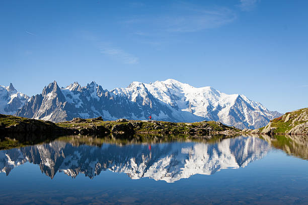

Exploring the French Alps: A Journey into the Heart of Alpine Wonder
A Majestic Landscape
The French Alps are home to some of Europe's highest peaks, including the iconic Mont Blanc, which towers at 4,810 meters (15,781 feet) and reigns as the highest mountain in Western Europe. This majestic landscape is characterized by its dramatic terrain—sharp peaks, deep valleys, and glacial formations that have been sculpted over millennia. The region is a haven for outdoor enthusiasts, offering a variety of activities year-round. During the winter months, the Alps transform into a snowy paradise. Skiers and snowboarders from around the globe flock to world-renowned resorts like Chamonix, Courchevel, and Val d'Isère. These resorts are not just famous for their extensive slopes but also for their luxurious accommodations, vibrant après-ski scenes, and gourmet dining experiences. Whether you're a seasoned pro or a beginner, there's a slope for everyone, with many resorts offering lessons and tailored programs. But the allure of the French Alps isn't confined to the winter. As the snow melts, the region reveals a completely different side—lush green valleys, crystal-clear lakes, and a rich diversity of flora and fauna. Summer in the Alps is perfect for hiking, mountain biking, rock climbing, and even paragliding. Trails range from gentle walks suitable for families to challenging treks that take you to remote and breathtaking vistas. The Tour du Mont Blanc, a roughly 170-kilometer trail that circumnavigates the Mont Blanc massif, is one of the most famous long-distance hikes in the world.
Culture and Cuisine
Beyond its natural beauty, the French Alps are steeped in culture and history. The region's villages and towns offer a glimpse into traditional Alpine life, with their charming chalets, historic churches, and vibrant local markets. The culture here is a blend of French and Alpine influences, evident in everything from the language to the festivals.
One of the most delightful aspects of visiting the French Alps is experiencing the local cuisine. Alpine food is hearty and comforting, perfect after a day of outdoor activities. Signature dishes include raclette and fondue, both centered around rich, melted cheese, and tartiflette, a decadent dish made with potatoes, reblochon cheese, lardons, and onions. Pair these with a glass of local Savoie wine, and you have a meal that embodies the warmth and hospitality of the region.
For a more refined culinary experience, the Alps are also home to several Michelin-starred restaurants, where chefs combine traditional ingredients with modern techniques to create innovative dishes that reflect the region's natural bounty.
Sustainable Tourism
In recent years, there's been a growing focus on sustainability in the French Alps. With the increasing impact of climate change on the region's glaciers and ecosystems, both local communities and visitors are becoming more conscious of the need to protect this unique environment. Many resorts and lodges are implementing eco-friendly practices, such as reducing energy consumption, promoting local and organic food, and encouraging car-free travel.
Moreover, initiatives like rewilding projects and the preservation of traditional farming practices are helping to maintain the biodiversity of the region. As a visitor, you can contribute by choosing eco-certified accommodations, respecting local wildlife, and supporting businesses that prioritize sustainability.
Conclusion
The French Alps are more than just a destination—they are an experience that engages all the senses. Whether you're carving your way down a pristine slope, breathing in the fresh mountain air on a summer hike, or savoring the rich flavors of Alpine cuisine, the French Alps offer a journey into a world of natural wonder and cultural richness. Whether you visit for adventure, relaxation, or a bit of both, the French Alps promise memories that will stay with you long after the mountain peaks fade from view.